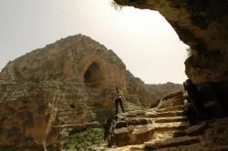
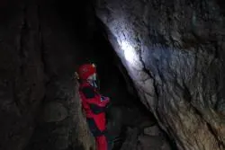
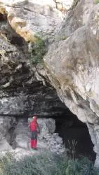

Mut Araştırması
19 Mayıs Perşembe 
Dün gece Mut’a vardık ve bugün Dereköy’den kuzeye, Göğden’e dek 11 km uzanan Sason Kanyonu’nun bir kısmını araştırdık. Burası ile Mut arasındaki diğer küçük boğazlara ve Kozlar Yaylası'nda bir kaya üzerinde bulunan Mavga Kalesi civarındaki mağaralara da baktık. Bölgedeki kanyonlarda birçok mağara ağzı görülmesine karşın, şimdiye dek uzun veya derin bir mağara ihbarı olmadı. Öte yandan, nedense bu bölgede tüm mağaralar kanyonların karşı duvarında yer alma konusunda çok israrlılar :) Yine de Dereköy yakınlarındaki Merdivenli Mağara’yı ölçtük ve birkaç tespit yaptık. Yarın bu tespitlere ve civardaki diğer ihbarlara bakacağız.

20 Mayıs CumaBu ülkede 40.000 köy varken Mut’un Alaçam Köyü’nde MTA Mağara Araştırmaları Birimi elemanları ile karşılaşma ihtimalimize herhalde ancak yuh denebilir ve bugün bu saçma olasılık gerçekleşti. Ardından, durumu teyit etmek için Koray Törk’le telefonda konuşunca onların da bir süredir burada çalıştığını öğrendik. Bu durum, sürekli olarak karşılıklı bilgi alışverişinde bulunmanın, hatta ortak bir araştırma takvimi oluşturmanın önemini gösteriyor. Telefon sohbetimiz sırasında öğrendiğimiz; tümü kireçtaşı blokları içinde yer alan bu bölgede bir haftadır çalışan MTA’nın da –aynen bizim gibi- fazla uzun ve derin mağara bulamamış olması ise diğer bir ilginç olgu. Bugünkü çalışmamız sırasında Alaçam Köyü’nde Sulucin, Derinçay Köyü’nde Ilısu mağaralarını ve Zeyker Yaylası’nda Peynir Obruğu’nu bulduk ve ölçtük. Şu anda da haritaları çiziliyor. Civarın en önemli mağarası olmaya aday; Sinobiç Köyü’ndeki Karain’in ağzı ise ancak akşamüstü bulunabildi, yarın sabah ölçüm alınacak.

Bugün sabah, girişini dün geç bir saatte bulduğumuz Karain Mağarası ölçüldü. Bu mağara gerçekten de şimdiye dek olanların en uzunu ve en ilginciydi. Mağaranın son kısımlarında kalabalık bir yarasa popülasyonuna rastlayınca, mağarada nasıl bu kadar çok sinek yaşadığını bayağı düşündük. Dönüş yolunda; Sertavul ve Dağpazarı’nda ihbar verecek olan şahısları bulamadığımız için yola devam edip Karaman’a ulaştık. Günü tek mağarayla bitirmeye gönlümüz razı olmadığından Taşkale, Manazan Mağaraları’na uzandık. Burası, dikey bir duvara oyulmuş, 3-4 katlı insan yapımı bir yerleşim. Odalar, ambarlar, tekrar odalar, dev salonlar ve sarnıçlarıyla inanılmaz bir yapılar kompleksi. Öndeki ‘lüks suit’ lerin pencerelerinden görünen manzara ise şahane. Burayı gezerken aklımıza daha önce konuştuğumuz; Türkiye’nin insan yapımı mağaralarının envanteri geldi ve bu projeyi ele almaya karar verdik. Yarın sabah yine mağara evleriyle meşhur Güldere / Gödet Köyü’ne uğradıktan sonra İstanbul’a döneceğiz.